Tu meriti tot. Cea mai bună miere, cel mai bun gust și cele mai bune benefici sanitare.Tu meriți miere curată!Suntem mândri să-ți oferim cea mai bună calitate a mierii la un preț bun.Mierea noastă pură și naturală 100%
Testimoniale
Ce spun clienții despre noi
Sonia P.
În ceea ce privește mierea... n-o pot lăuda îndejauns. Inițial, am comandat-o pentru niște probleme digestive pe care cred ca mi le-a ameliorat întrucâtva. Dar efectul pozitiv și imediat a fost pe migrenele care îmi fac viața un calvar de ani de zile, așa că de la o medie de 3 zile/săpt. chin, au ajuns să mă mai supere doar arareori! De asemenea, e minunată pentru durerile în gât. Am mai testat-o și cu altă ocazie și efectul (în cazul meu) a fost de diminuare rapidă a durerii.
Eduard Z.
Produse excelente de la un producător care se dedică trup și suflet acestei minunate meserii de apicultor! Deci, mulțumim atât albinelor cât și celor care au grijă de ele, dar și de noi
Simona C.
Într-o piață acaparată de produse care ne fac mai puțin bine, nu ne-am pierdut speranța în găsirea produselor naturale cu adevărat #BIO.
Ioana A.
Sunt produse de o înaltă calitate. Ambalate frumos și atractiv la prețuri accesibile. Felicitări!
Produse
Produsele Viitorului
Va oferim o varietate ca sa-ti satisfaca gusturile
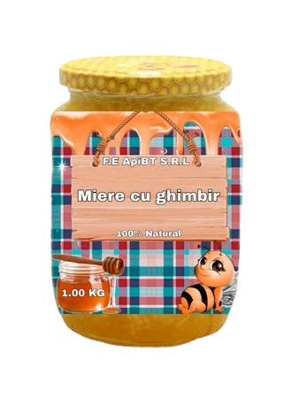
Miere cu Ghimbir
20 lei
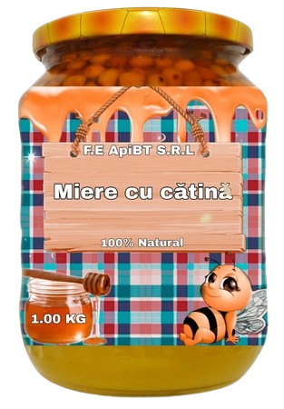
Miere de Catina
20 lei
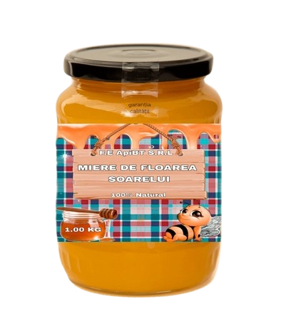
Miere de F.S
20 lei
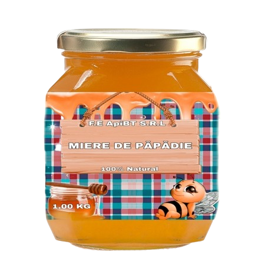
Miere de Papadie
20 lei
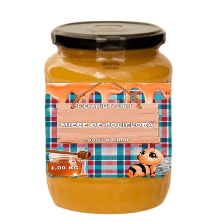
Miere de Poliflora
20 lei
Miere de Rapita
20 lei
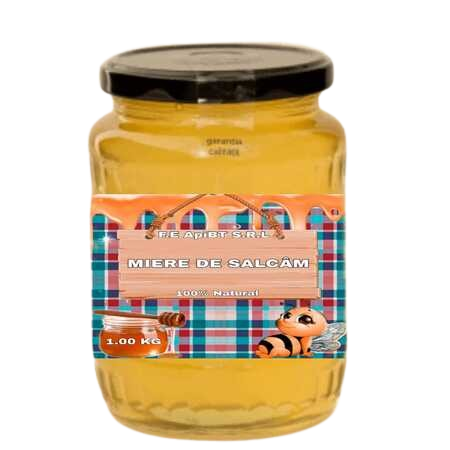
Miere de Salcâm
20 lei
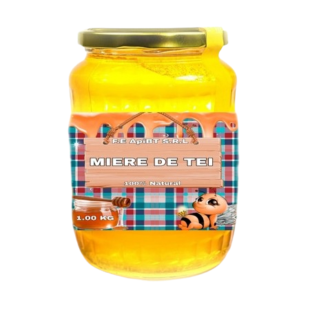
Miere de Tei
20 lei
Despre noi
Api Botoșani
Coduri CAEN
0149
- Creșterea altor animale
1032
- Fabricarea sucurilor de fructe și legume
4791
- Comerț cu amănuntul prin intermediul caselor de comenzi sau prin Internet
Povestea Noastră
În adâncul Pădurii de 100 de faguri, în cel mai mare și mai generos stejar, locuia cel mai mare iubitor de miere - Winnie.
Într-una din zilele în care Winnie era în căutare de miere, se întâlnește cu Bizzy, o veche prietenă din copilărie. Aceasta era în căutarea unui nou cămin deoarece stupul ei a fost distrus de o furtună puternică. Înduioșat de poveste, Winnie se oferă să o găzduiască.
Timpul trece iar Bizzy începe crearea unui nou stup, unde să producă miere, cu ajutorul lui Winnie care a plantat flori toată primăvara. După ani și ani de muncă, rezultatele au fost pe măsură. Cei doi au observat că vecinii lor, locuitori ai pădurii, au devenit interesați de mierea pe care o produceau așa că au beneficiat de oportunitate și și-au deschis o mică afacere cu miere. Totul mergea bine până când noii locuitori ai pădurii s-au plâns de lipsa de diversitate a produselor și vânzările lor au început să scadă.
Într-o zi, pe când Bizzy se gândea la ce ar putea face ca să salveze afacerea și să atragă și clienții mai pretențioși, Winnie se înfrupta din coșul cu zmeură și își sorbea fără sfială ceaiul de păpădie. Într-un moment de neatenție, Winnie, scapă fructele și plantele din ceai în cazanele cu miere. Bizzy speriată le scoate cât poate de repede din cazane, dar Winnie pofticios de fel ia de la albinuță și gustă fructele, acum acoperite cu miere și sare de bucurie:
- Nu am mai gustat ceva așa de bun până acum...spune Winnie sărind de bucurie.
Bizzy curioasă gustă și ea. Un succes!
Și așa Winnie și Bizzy au hotărât să încerce să producă și miere cu plante. Au avut succes cu mai multe feluri de miere: de salcâm, de păpădie, tei, păducel și miere cu fructe de aronia.
Anii trec și ei prosperă. Cel mai mare stejar, aflat acum in cel mai mare câmp de flori, locuit de cei mai buni prieteni și cu cea mai bună miere din Pădurea celor 100 de faguri.
Inspirați de povestea celor doi am decis să vă aducem si dumneavoastră rețetele pline de savoare și sănătate.
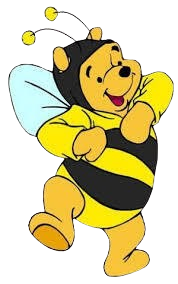
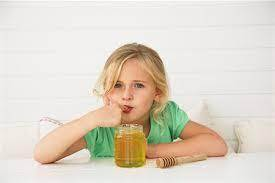
O singura linguriță cu miere este suficient pt a întreține viata unui om pt 24 de ore ?
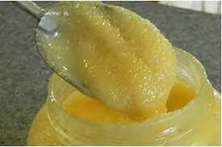
Mierea naturală cristalizează.Pentru miere exista o linguriță specială făcută din lemn și nu din metal
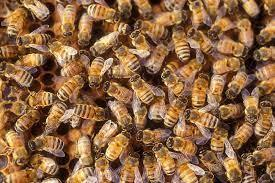
Într-un stup se gasesc între 10.000 și 80.000 de albine.
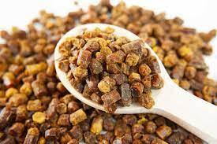
Polenul poate avea peste 1500 de culori și nuanțe.
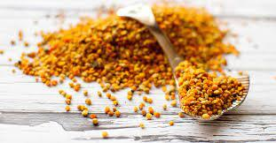
Pastura de albine este cel mai sănătos aliment de pe pământ.
Pentru a obține 1 kg de miere, este necesar nectarul a peste 1.000.000 de flori .
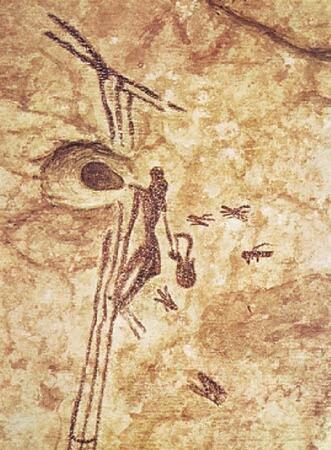
În Spania, un desen antic dintr-o peșteră arată un om care scoate mierea dintr-un stup, o pictură rupestra care datează de acum 15.000 de ani.
Beneficiile mierii în alimentația copilului
Mierea poate fi folosită ca înlocuitor pentru zahăr (în special pentru zahărul alb, rafinat, dar și orice alt tip de zahăr), însă, nu se rezuma doar la acest aspect. Mierea, dincolo de faptul că este o substanță lichidă dulce, conține minerale și enzime vitale pentru organism. Nu este doar calorie goală (ca în cazul zahărului).
O lingură de miere conține 64 de calorii și asigură 17g de carbohidrați comprimați în sucroză, glucoză, maltoză și galactoză, carbohidrați care asigură necesarul de energie pentru întreaga zi. De asemenea, conține și mulți nutrienți precum potasiu, calciu, fosfor, fier, magneziu, fluor, seleniu, vitamina C și complexul de vitamine B, în special piridoxină - B6, acid pantotenic - B5, niacină - B3.
Consumul de miere este recomandat oricărei persoane care nu este alergică la polen sau la un alt compus care se regăsește în miere. Singurul amendament îi vizează pe copiii mici care nu au voie să consume miere înainte de vârsta de 1 an (din cauza riscului crescut de botulism infantil) și nu este recomandat să consume miere sau alți îndulcitori până la vârsta de 2 ani.
Mierea are multiple întrebuințări benefice atât pentru copii, cât și pentru adulți. Dar în acest articol ne-am îndreptat atenția către cei mici, astfel încât iată-le pe câteva dintre cele mai importante:
Le întărește sistemul imunitar - primăvara și toamna este recomandată o cură cu miere simplă, cu cătină, amestecată cu polen sau/și cu tinctură de propolis. Există, desigur, multe alte rețete care vin în ajutor.
Este un antibiotic natural cu proprietăți antiinflamatorii - neprelucrată, mierea conține propolis considerat antibiotic natural, un fel de "penicillină" fără efecte adverse.
Este un remediu natural pentru răceală și durerile de gât/tuse - un studiu din 2007 atestă faptul că mierea este eficientă în ameliorarea simptomelor de tuse în special pe timpul nopții și a dificultăților de somn din cauza infecției tractului respirator superior. Un alt studiu din 2016 a evidențiat faptul că o răceală banală poate fi tratată ușor pe bază de miere. Sigur, în orice afecțiune cu care te confrunți, cere imediat sfatul medicului care urmărește copilul. Poți oferi copilului dar și adulților care se confruntă cu durere de gât sau tuse una dintre aceste combinații:
O ridiche neagră scobită în mijloc, umplută cu o linguriță de miere și lăsată la macerat 1-2 ore din care se consumă la nevoie
O cană de apă fierbinte în care se dizolvă o linguriță de miere amestecată cu ¼ lingură de scorțișoară pudră - se bea de două ori pe zi până dispar simptomele.
Este un unguent natural pentru pielea rănită - în caz de arsură sau rană la nivelul pielii, poți spăla zona cu apă, apoi poți aplica un strat de miere. Aceasta are rolul de a hidrata și de a vindeca zona afectată având capacitatea de a cicatriza.
Are proprietăți antibacteriene și antimicotice - datorită acestora, mierea poate omorî bacterii precum E.Coli, Helicobacter Pylori și chiar Salmonella având un rol important în reglarea tranzitului intestinal și al digestiei. Conține probiotice, bifido bacterii și lactobacilli care previn gastritele și tratează ulcerul. Se poate oferi de două ori pe zi o ceașcă de ceai negru/apă caldă (în funcție de vârsta copilului) în care se amestecă o lingură/linguriță de miere.
Pentru că suntem părinți, la rândul nostru, ne preocupă ca și tine un stil de viață sănătos și o alimentație curată și echilibrată atât pentru copii, cât și pentru întreaga familie.
De aceea, oricât de sănătoasă ar fi mierea, este important să ținem cont de recomandările care o însoțesc: să fie dintr-o sursă sigură și curată, să o consumăm cu prudență și echilibrat pentru a ne bucura cu toții de beneficiile reale pe care le oferă sănătății noastre.
Cum identificăm mierea de albine contrafăcută
Tot mai mulți clienți și prieteni ne-au întrebat cum se poate deosebi mierea naturală de cea contrafăcută.
Pentru a vă răspunde la întrebări, am decis să scriu acest articol care să vă ajute să folosiți numai miere naturală.
Cea mai sigură metodă de a distinge mierea contrafăcută de cea naturală este analiza de laborator, examenul microscopic sau examenul organoleptic, care se referă la culoarea, mirosul, gustul, consistența și puritatea mierii.
Totuși, nu toți avem la dispoziție laboratoare de analiză pentru a afla dacă mierea este adevărată.
Din fericire, există câteva metode aproximative prin care să îți poți da seama dacă ai de a face cu o miere contrafăcută sau nu.
Acestea sunt metode necertificate, aproximative, neutilizate de vreo instituție autorizată.
1. Testul cu alcool:
încălzește într-un vas de sticlă 2 linguri de miere. Adaugă 6 linguri de alcool de 90 de grade și amestecă bine. Așteaptă aproximativ o oră. Dacă apare o substanță albă pe fundul borcanului, atunci este foarte probabil ca mierea să fi fost falsificată.
2. Testul fluidității:
introdu o lingură în borcanul cu miere, apoi ridic-o și lasă mierea să curgă. Dacă mierea curge continuu, fără să se desprindă în picături, atunci cel mai probabil mierea este naturală. Atenție: mierea de salcâm este mai fluidă decât cea de floarea-soarelui sau poliflora.
3. Testul cristalizării:
se știe că mierea de floarea-soarelui și cea polifloră cristalizează rapid, în timp ce mierea de salcâm cristalizează mai greu, după aproximativ 1-2 ani. Dacă ai cumpărat miere și 5-6 luni mai târziu ea nu are deloc mici cristale, e foarte posibil ca ea să fi fost contrafăcută. Mierea cristalizată poate redeveni fluidă dacă este pusă în apă de maximum 40 de grade. Atenție, nu folosi temperaturi mai mari pentru că mierea își va pierde din proprietăți!
4. Testul mirosului:
mierea ar trebui să păstreze aroma plantelor din care este culeasă. De obicei, mierea falsificată este doar dulce, fără vreo aromă.
5. Testul scufundării:
mierea are densitatea de 1,4 ori mai mare decât apa. Dacă lași să se scurgă miere dintr-o lingură într-un pahar cu apă rece, mierea ar trebui să cadă la fund și să nu se împrăștie rapid în apă. O miere contrafăcută are densitatea mai mică și se împrăștie imediat în apă.
6. Testul creionului chimic:
pune miere într-o lingură, apoi amestecă cu un creion chimic aproximativ un minut. Dacă mierea se colorează, este posibil să fie falsificată. În cazul în care culoarea nu se modifică, mierea este naturală.
Responsabilitate socială pentru comunitate
Responsabilitatea socială este un concept etic care sugerează că o companie, fie că este o organizație sau un individ, are obligația de a acționa în beneficiul societății în ansamblu. Organizațiile care sunt deschise către o astfel de viziune recunosc faptul că, pe lângă afacerile lor, au obligația de a returna societății o parte din resursele pe care le folosesc pentru producție. Responsabilitatea socială este datoria fiecăruia dintre noi și se referă la acționarea pentru menținerea unui echilibru între economie, progres și societate.
Responsabilitatea socială pentru comunități își propune așadar să promoveze indirect afacerile având în vedere intervenția pozitivă în mediul de activitate. Conform acestei viziuni, afacerile trebuie să urmărească în primul rând prosperitatea din jur și mai apoi obținerea de profit.
În acest context, și firma noastră este implicată în două direcții majore de impact asupra comunității deservite și anume:
- livrăm lunar sub formă de sponsorizare, o cantitate de 300 de stickuri de miere către două grădinițe din municipiu. Copiii de acolo pot beneficia astfel la micul dejun de sursa de sănătate din mierea naturală;
- livrăm trimestrial către o casă de copii și un cămin de bătrâni din municipiu cantitatea necesară de miere de albine și derivate;
- livrăm lunar către un spital de copii 600 de stickuri de miere care vor fi servite la micul dejun copiilor bolnavi internați pe secțiile spitalului.
 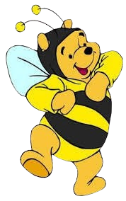
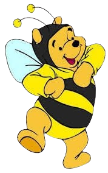

Testimoniale
Ce spun clienții despre noi